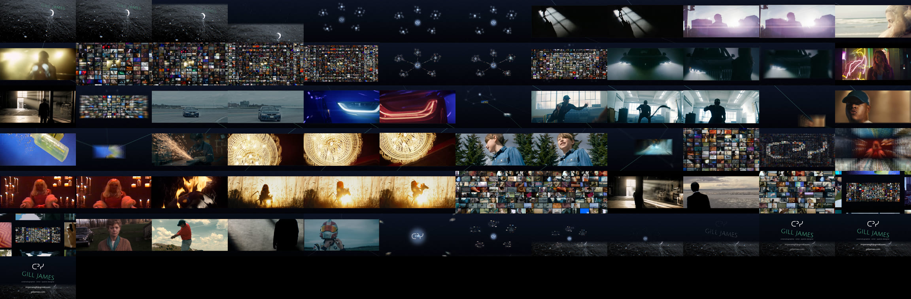

73 s · one continuous zoom through the site's constellation · only Gill's own work · cut to Lost Coffee, "Lost in Time", with voices from Gill's films
download the video · full shot list, techniques and notes
| 1 open 0:00–0:06 | Moonwater, the tilted mint name, a tilt up as the reflected stars become the constellation. "It's within me." |
| 2 dive in 0:06–0:12 | into FILM. Its stars become frames and the cuts travel along the lines: Arc'teryx → Braun → John Frieda → Stay Gold |
| 3 overload 0:12–0:26 | 621-tile wall → the tiles form the constellation → scatter → photo wall → BMW X7 Legends full-frame ("What are legends made of?") → strobe → the BMW tile zooms to full frame |
| 4 heroes 0:26–0:45 | BMW Drift → BMW Electrify the Night, AXE Golden Moment, Stay Gold, John Frieda, Canadian Ironworkers, Braun, Mandie → Electrify mist on a chain of stars, pulling out through each frame to the stars between them |
| overload II 0:45–0:59 | ᑕᐣᓯ mosaic → Verona's Obsession, Allan Rayman, Hey Ocean, Weird Kid (long horse hold) → moving tile river → flash overload of 43 live shots |
| infinite zoom 0:59–1:04 | walls inside walls of moving footage, then a recap on the hits: Backward Fall → Special Olympics → Electrify tunnel → Arc'teryx → BMW helmet |
| 5 close 1:04–1:13 | out to the whole constellation, the water returns, the stars condense into GILL JAMES ᑕᐣᓯ · imjamesgill@gmail.com · gilljames.com |
